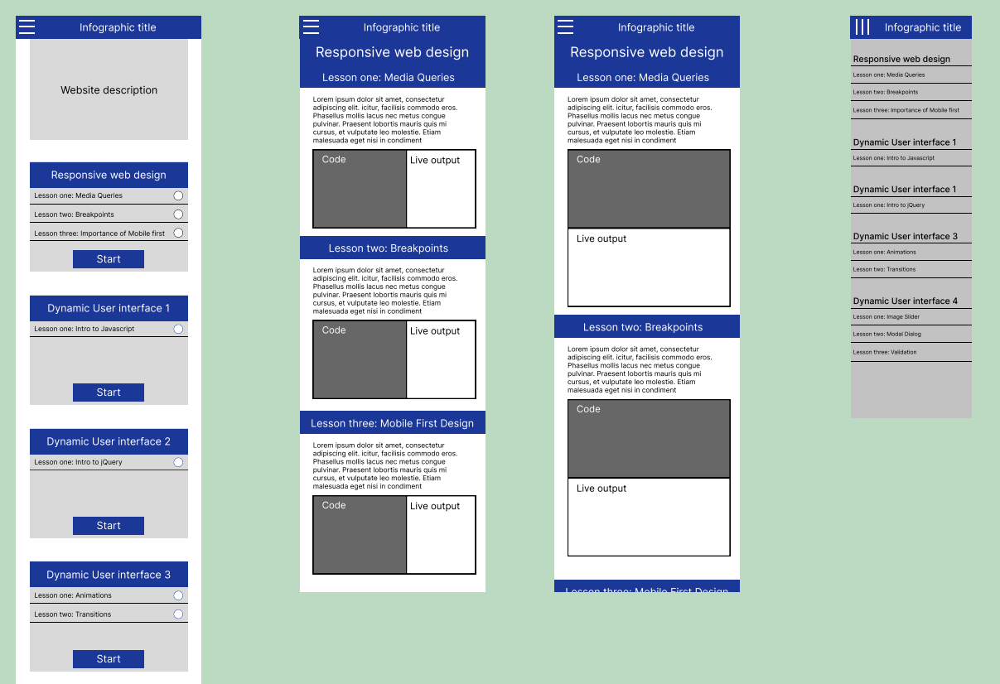
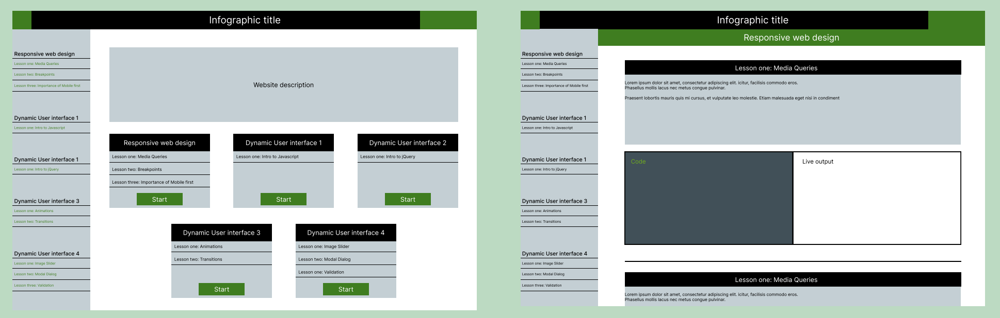
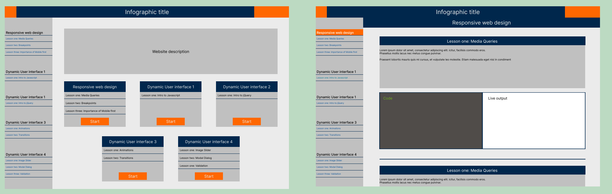
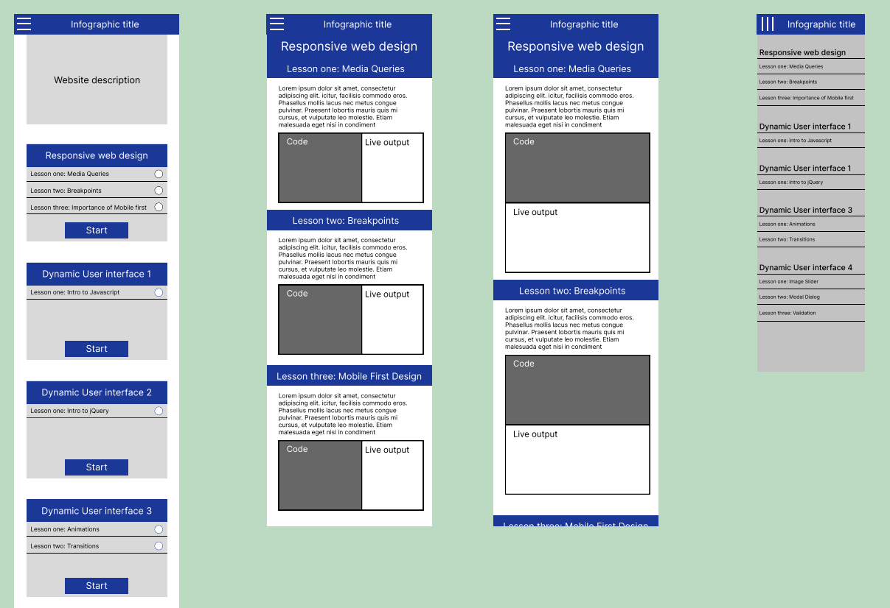
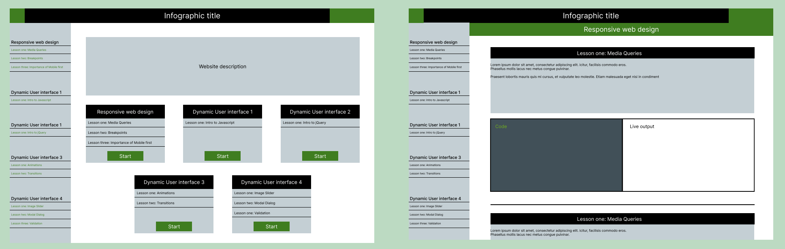
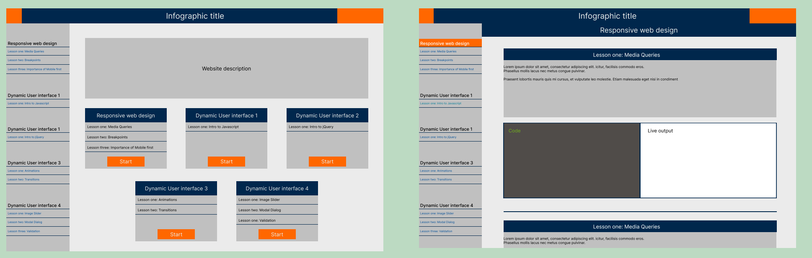

The project had 5 stages: Research and Planning, Design, Development, Testing and Presentation.
My input was focused on the research and design part of the process, Where I took into account trends among educational websites and how their layout allows for easy navigation. I made sure to also add finishing touches like CSS animations.
Or scroll down too see some snippets from the design process.
 




